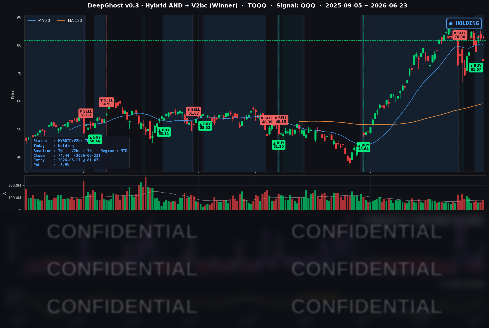

한-일 반도체 주가 폭락이 나스닥 반도체까지 번졌습니다. 경제지표 및 금융시스템 리스크는 전혀 없었습니다. 폭락의 원인은 그냥 "차익 실현" 인 것 같습니다. 패닉셀이 끝나고 다시 반등할지 지켜봐야할 것 같습니다. 저희는 시그널대로만 움직입니다.
📊 오늘의 매매 신호
| 항목 | 내용 |
|---|---|
| 오늘 할 일 | ✅ 아무것도 안 해도 됩니다 |
| 포지션 상태 | 📈 TQQQ 보유 중 (IN POSITION) |
| 매수 진입일 | 2026-06-17 (6일째) |
| 진입가 → 현재가 | $81.67 → $74.44 |
| 현재 포지션 수익 | -8.9% |
지난 6월 17일 진입한 자리를 6거래일째 지키는 중입니다. 보유 수익은 마이너스로 돌아섰지만, 시스템의 매도 조건에는 아직 도달하지 않아 룰에 따라 보유를 이어갑니다.
TQQQ 시그널 — IN POSITION
현재 상태: 매수 포지션 유지 중 | 보유 수익 -8.9%

어제(6/22)까지만 해도 대형 기술주가 무더기로 빠지는 와중에도 +1.1%의 수익을 지켜냈습니다만, 오늘(6/23)은 버티지 못했습니다. 매도세가 대형 소프트웨어주에서 반도체로 옮겨붙으면서 나스닥100 자체가 -3.29% 급락했고, 3배 레버리지 TQQQ는 -9.86% 빠졌습니다. 그 결과 진입가 $81.67 대비 보유 수익이 어제 +1.1%에서 오늘 -8.9%로 약 10%포인트 후퇴했습니다.
그럼에도 신호는 보유(HOLD)를 유지합니다. AI 매도(청산) 신호는 나오지 않았습니다.
다만 한 가지 주시할 점이 있습니다. 시스템 내부 지표가 처음으로 매도 신호 쪽으로 한 걸음 다가섰습니다. 단정할 단계는 아니며, 다음 거래일에 어느 방향으로 움직이는지를 지켜보는 관찰 포인트로만 기억해 두면 됩니다.
오늘 미국 시장 — 시황 요약
지수 마감
| 지수 | 종가 | 등락률 |
|---|---|---|
| S&P 500 | 7,365.46 | -1.44% |
| 나스닥 종합 | 25,587.04 | -2.21% |
| 다우존스 | 51,666.84 | -0.09% |
| 러셀 2000 | 2,975.48 | -0.96% |
| QQQ (나스닥100) | 713.65 | -3.29% |
| TQQQ (3배) | 74.44 | -9.86% |
다우(-0.09%)는 거의 보합인데 QQQ는 -3.29%로, 지수 간 격차가 3%포인트 넘게 벌어졌습니다. 시장 전체가 무너진 패닉이 아니라 반도체·AI 쪽에 매도가 집중된 하락이라는 뜻입니다.
국채 금리 동향
| 만기 | 수익률 | 전일 대비 |
|---|---|---|
| 3개월 | 3.690% | +3.2bp |
| 5년 | 4.261% | +3.6bp |
| 10년 | 4.493% | +4.2bp |
| 30년 | 4.940% | +3.9bp |
장단기 금리가 모두 함께 올랐습니다(장기물이 더 가파른 '베어 스티프닝'). 단기 금리까지 오른 것은 시장이 연준의 추가 인하가 아니라 인상 쪽 가능성을 가격에 반영하기 시작했다는 신호입니다. 금리 상승은 멀리 보고 평가받는 성장주·AI 반도체의 밸류에이션에 직접적인 역풍으로 작용합니다.
연준 발언 & 금리 패스
신임 케빈 워시(Kevin Warsh) 연준 의장의 첫 기자회견이 이날 시장을 흔든 직접적인 방아쇠였습니다. 시장은 그를 비둘기파로 봤지만, 실제로는 물가 안정을 우선하는 매파로 드러났습니다. 점도표 중간값도 2026년 말 금리를 3.8%(3월 3.4%에서 상향)로 올려 잡았습니다. 여기에 BofA가 같은 주에 전망을 뒤집어 2026년 3회 인상(총 75bp)을 제시한 것이 이날 반도체 매도를 가속했습니다.
오늘의 핵심 이슈
- 반도체 주도 글로벌 매도 — AI 투자 지속 가능성에 대한 경계가 커지며 반도체가 지수 하락을 견인했습니다. 아시아 반도체부터 약세가 번져 한국거래소가 변동성 급등으로 약 20분간 서킷브레이커를 발동할 정도였습니다.
- 연준 매파 전환의 가격 반영 — 워시 의장의 매파 기조와 BofA의 인상 전망이 단기 금리 상승과 성장주 밸류에이션 하향을 동시에 자극했습니다.
- 마이크론 실적을 앞둔 포지션 정리 — 마이크론(MU)이 -13.18% 급락했습니다. 6/24 장 마감 후 실적 발표를 앞두고 차익실현 매물이 집중됐습니다.
변동성 & 투자심리
- VIX(공포지수): 19.49 (+12.79%) — 18~20선을 위로 돌파하며 헤지 수요가 늘었습니다. 다만 패닉(25 이상) 수준은 아닙니다.
- 공포탐욕지수: 28 = '공포(Fear)' 구간.
- 금리 상승에 더해 안전자산인 금까지 함께 빠진, 현금을 선호하는 방어 국면입니다.
매크로 & 원자재
- WTI 유가: $73.11 (-2.29%)
- 브렌트 유가: $76.99 (-1.17%)
- 금: $4,130.40 (-1.23%)
유가와 금이 동반 하락했습니다. 안전자산인 금까지 매도된 점이 이날의 위험 회피가 '특정 자산 회피'가 아닌 '현금 선호' 성격임을 보여줍니다.
주요 종목 동향
| 종목 | 종가 | 등락률 | 비고 |
|---|---|---|---|
| MU | 1,051.77 | -13.18% | 6/24 장후 실적 앞둔 포지션 정리 |
| QCOM | 204.13 | -8.01% | 반도체 동반 매도 |
| INTC | 132.28 | -6.14% | 반도체 동반 매도 |
| TSLA | 381.61 | -5.79% | FSD 안전조사 + 인도량 우려 |
| NVDA | 200.04 | -4.13% | AI 반도체 차익실현, 200달러선 후퇴 |
| AVGO | 380.15 | -3.06% | 반도체 약세 동조 |
| GOOGL | 346.13 | -1.02% | 테크 약세 동조, 낙폭 제한 |
| AAPL | 294.30 | -0.91% | 시장 대비 선방 |
| META | 562.20 | -0.29% | 거의 보합, 방어적 |
| NFLX | 72.82 | -0.08% | 보합 |
| AMZN | 234.11 | +0.57% | 반등, 방어적 강세 |
| MSFT | 373.94 | +1.80% | 클라우드/방어 매수 유입 |
자금이 반도체에서 빠져나와 소프트웨어·클라우드 대형주로 옮겨가는 흐름이 뚜렷했습니다. 이날 오른 종목은 마이크로소프트와 아마존, 단 둘뿐이었습니다.
Ghost.AI — Quantitative AI Investment
Model: DeepGhost v0.3 | Transformer-Based Deep Learning
Coverage: 13 tickers | Updated every trading day after US market close
⚠️ 본 자료는 정보 제공 목적으로만 작성되었으며 투자 권유가 아닙니다. 모든 투자의 책임은 투자자 본인에게 있습니다. 과거 성과가 미래 수익을 보장하지 않습니다.
[유의사항]
- 본 서비스는 불특정 다수를 대상으로 발행되는 단방향 정보 제공 서비스이며, 투자자 개인의 재산 상황·투자 목적·위험 선호도를 반영한 개별 투자 조언이 아닙니다.
- 고스트에이아이 주식회사는 고객과 쌍방향 의사소통(개별 상담, 맞춤형 자문 등)을 제공하지 않습니다.
- 본 콘텐츠는 투자 권유 또는 매매 주문의 청약·청약의 권유에 해당하지 않으며, 최종 투자 판단 및 그에 따른 손익의 책임은 전적으로 투자자 본인에게 있습니다.
고스트에이아이 주식회사